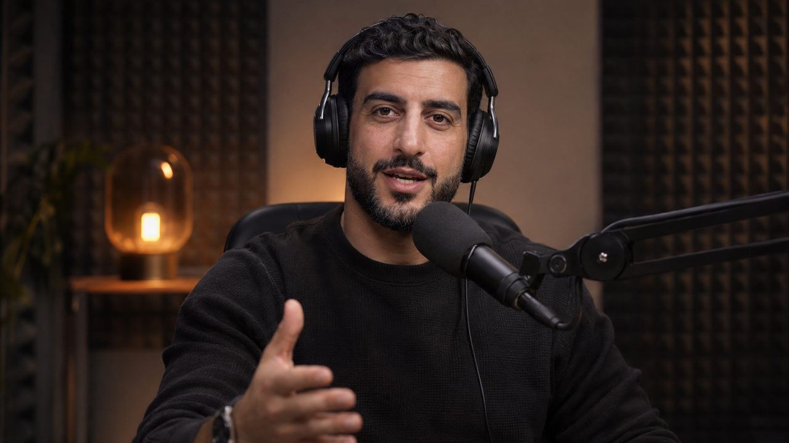
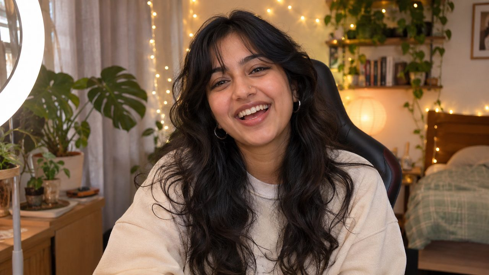
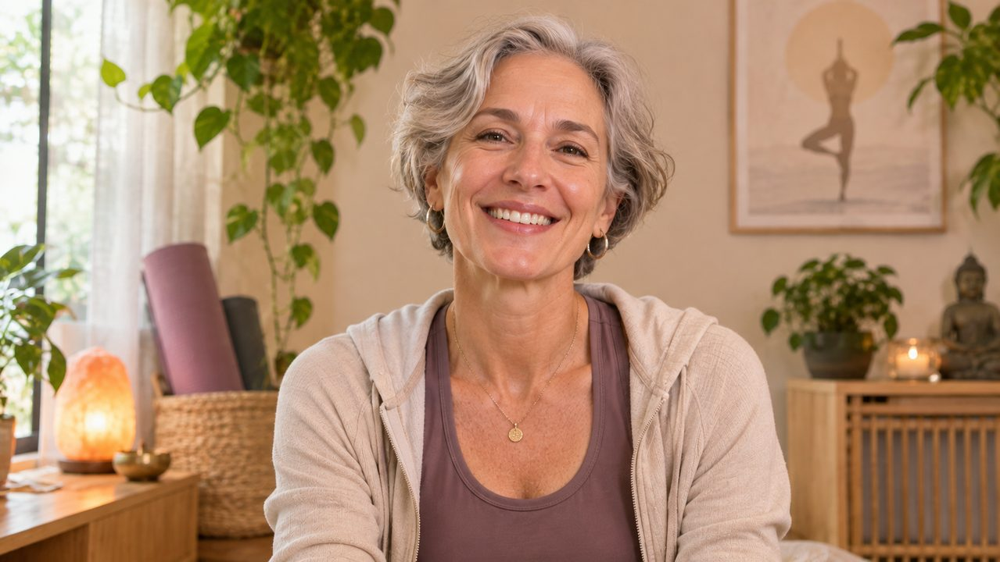
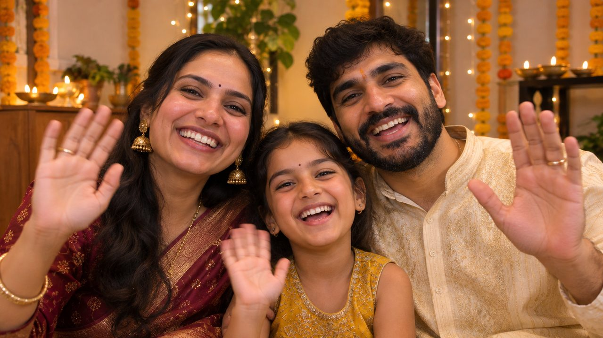

Make your webcam better
Keep the camera you have. KISSIK fixes what it can't.
- Blur, replace or remove the background on your own GPU
- Your screen as a soft ring light, 2200–9000 K
- Auto-framing that follows you
WebcamMei · Lesson
Phone cameraOmar · Deep Dive
Phone cameraRiya · Just Chatting
WebcamHelen · BreatheUse your webcam, or turn your phone into a better one. KISSIK adds the background, framing, light and scenes, in every app on Windows 11.
No account · No watermark · Open source
Phone cameraThe Sharmas · DiwaliKeep the camera you have. KISSIK fixes what it can't.

Your phone's camera is far better than a laptop's. Pair it in seconds.
Either way, KISSIK shows up as one camera in every app: meetings, streaming and browsers.
If Windows sees it as a camera, KISSIK can use it. Switch between them in one click.
 12
12KISSIK runs on your Windows PC and sends the finished picture to whatever you call from.
On the left, a plain laptop webcam. On the right, a phone through KISSIK with screen light, a softer background and a name plate.


Over 40 tools in one app, worked out on your own graphics card.
Nothing is held back to make you pay. No trial, no tiers, no catch. KISSIK is open source.
KISSIK has no ads, no paid tier and no investors. Your donation pays for development, starting with the iPhone app so your iPhone can be your webcam too.
krigrv@upiCompanies: want KISSIK for your team, a custom build, a sponsorship, or to talk about buying the project? Get in touch.

Download for Windows 11 and open it. No sign-up.
In your meeting, streaming or browser app, choose "KISSIK" in the camera list.
Open the KISSIK phone app and scan the QR code on your PC.
Yes. Every feature is free, including 4K, the phone camera and all 100 scenes, on as many PCs as you like.
No. KISSIK works with any webcam. The phone is an option when you want a better camera.
No. Everything runs on your own computer, and there's no account.
KISSIK appears as a camera in meeting apps, streaming apps and browsers.
Android is in testing now. macOS, Linux and iPhone are planned.